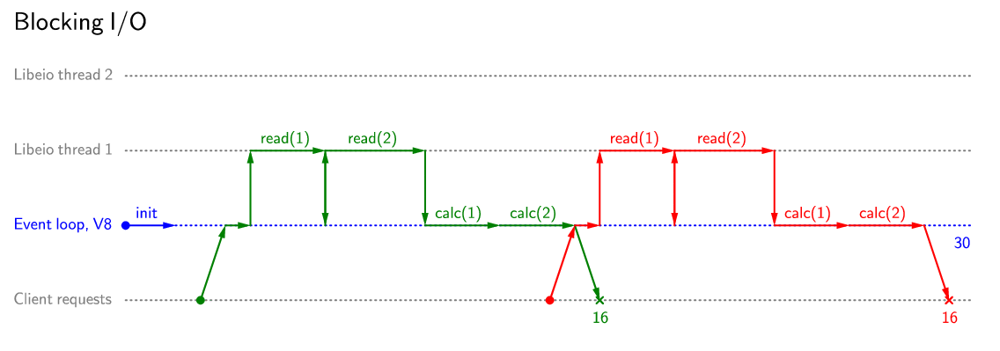
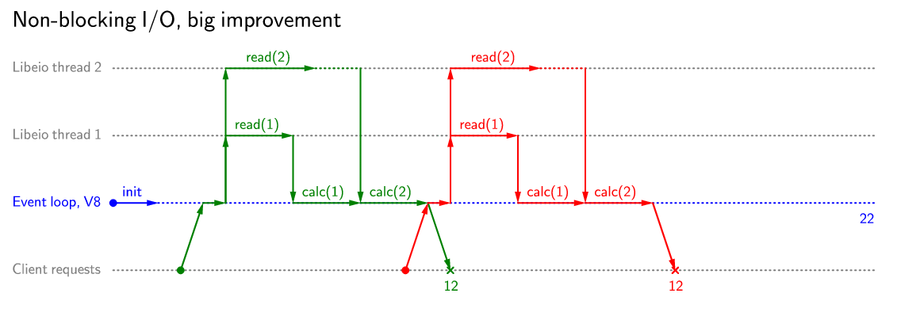
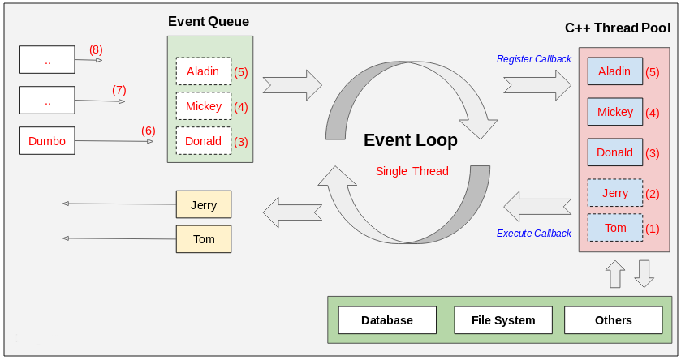

Introduction to Node.js
Created for
Created by

Overview
Overview
What is node?
- Node.js is a JavaScript runtime built on Chrome’s V8 JavaScript engine.
- Node.js has a standard library for IO, networking and other common back-end tasks.
- Its community provides a vast set of libraries easily installed and managed with NPM (Node Package Manager)
What is node?
- Node.js uses an event-driven, non-blocking I/O model that makes it lightweight and efficient.
- Node.js, as JS itself, is a single-threaded (Web Workers APIs are another story).
What is node?
- Node.js is created by Ryan Dahl (leaves the project at 2012)
Install
- Install from: nodejs official site
- Manage multiple active node.js versions:
- Node Version Manager (nvm)
- nvm-windows
Update
npm install npm@latest -g
Check installed versions
$ node --version
# node -v
# you should see the installed node version
Node and EcmaScript Support
- The new features from the JavaScript ECMA-262 specification are brought to Node.js developers in a timely manner
- Overview over supported ECMAScript features in various versions of Node.js is given in node.green site.
References
Nodejs Basics
Nodejs Basics
Blocking vs. Non-blocking
 {kind=link}
{kind=link}
Reference: Visualization of the flow of work in Node.js
NodeJS Event Loop - Diagram
{kind=link}
NodeJS Event Loop Overview
- NodeJS is a Single Thread application. But it is built on top of a platform written in C++, which uses multi-thread to carry out tasks at the same time.
- Each event (like user request) is placed into an Event Queue (organized as FIFO: First In First Out).
- The Event Loop is an endless loop, which passes the requests to the C++ based Thread Pool and each request is registered a Callback function
- When the request is finished handling, the corresponding Callback function will be executed.
Blocking vs Non-blocking IO - example
const fs = require('fs');
let fileName = './someData.txt';
function blockingRead(fileName) {
const data = fs.readFileSync(fileName, 'utf8');
// blocks here until file is read
console.log(`Sync data read:`);
console.log(data);
}
function nonBlocking(fileName) {
fs.readFile(fileName,'utf8', (err, data) => {
if (err) {
throw err;
}else{
console.log(`Async data read:`);
console.log(data);
}
});
// the callback will be executed when data are readed.
}
console.log(`~~~ 1 ~~~ `);
blockingRead(fileName);
console.log(`~~~ 2 ~~~ `);
console.log(`~~~ 3 ~~~ `);
nonBlocking(fileName);
console.log(`~~~ 4 ~~~ `);
Nodejs - server demo
Nodejs - server demo
Creating simple server
const http = require('http');
const hostname = '127.0.0.1';
const port = process.env.PORT || 8080;
const server = http.createServer((req, res) => {
res.statusCode = 200
res.setHeader('Content-Type', 'text/plain')
res.end('Hello from My Server!\n')
});
server.listen(port, hostname, () => {
console.log(`Nodejs server is running at http://${hostname}:${port}/`)
});
The node package manager (npm)
The node package manager (npm)
Overview
- npm is an open source package manager for JavaScript code.
- Helps the developers to share and re-use packages.
- It's the world’s largest software registry (modulecounts.com)
What is NPM?
- NPM allows you to install external node packages (utility functions, libraries or whole frameworks) from the command line. They are the dependencies of your application.
- You can install these packages either to your global node package folder or to your local project folder.
- Global node packages are accessible from everywhere in the terminal and you have to install them only once to your global directory
- Local node packages are accessible only from your project folder
What is NPM - official video
Install/Update
# you may need sudo if you've installed node globally
npm install npm@latest -g
initialize a npm project
- Before starting your project, which will use node modules, you have to initialize the project, and write the package.json file
- Only when you have that file, you can install new local packages via npm
#initialize a npm project (-y == defaults for package.json)
npm init -y
share a npm project
- the
package.jsonenables you to share your project with other developers without sharing all the node packages (the dependencies). - Someone who will use your project can simply install all packages by using
npm installon the command line. npm installscript takes all the dependencies listed in the package.json file and installs them in the node_modules folder
package installation
# Install package locally
npm install <package>
# Install package globally
npm install -g <package>
- The installed package will automatically appear in a folder called node_modules and will be listed in the package.json file next to your other dependencies.
Nodejs Pros/Cons
Nodejs Pros/Cons
Pros
- Simplicity (just bindings to c libraries and V8)
- Extremely fast - can handle hundreds of requests on a single thread.
- if they are not CPU intensive
- NodeJs is a perfect candidate for real time communication over internet. Combine it with Socket.IO and you will get a good scalable web socket server
- Huge ecosystem and vibrant community
Cons
- Node Js handles multiple requests using one single thread. If a problem occurs whole node js instance will crash along with any global data that was stored
- when NodeJs gets a CPU intensive request, all the other requests get blocked till this CPU intensive request stops for an I/O
What's next?
What's next?
Deno
- deno - A secure TypeScript runtime built on V8 (From the creator of node.js)
These slides are based on
customised version of
framework